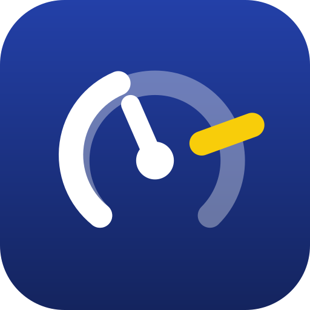

MMTrackMechanical Section · JKR Bahagian Sibu
Mechanical
maintenance, tracked.
Jobs, contracts, SGRs and reports for the Mechanical Section. Sign in with your Google account, then your MMTrack access code.
Open MMTrackPut MMTrack on your iPhone or iPad
- Open this page in Safari.
- Tap the Share button (square with an arrow).
- Tap Add to Home Screen, then Add.
Put MMTrack on your Android phone
- Open this page in Chrome.
- Tap the ⋮ menu at the top right.
- Tap Add to Home screen, then Add.
On a computer
- Bookmark this page, or in Chrome or Edge use ⋮ › Cast, save and share › Create shortcut (Chrome) or … › Apps › Install this site (Edge).
This page is not linked to the app yet. The admin needs to paste the Web app URL into index.html.